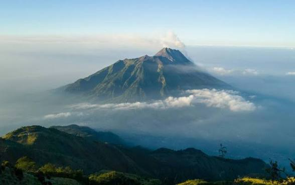

Gunung Merbabu adalah sebuah gunung api strato yang terletak di Provinsi Jawa Tengah, Indonesia. Gunung ini sangat terkenal di kalangan pendaki lokal maupun mancanegara karena memiliki padang rumput sabana yang sangat luas serta panorama lautan awan yang menakjubkan di ketinggian 3.142 Mdpl.
